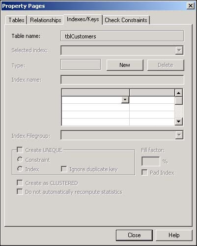
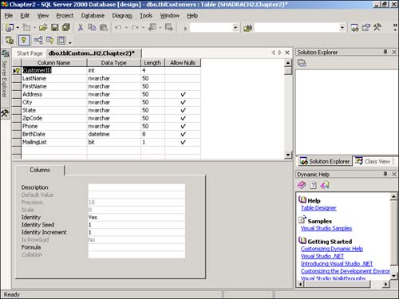

2.3 Define a Primary Key and Other Indexes
Indexes are used to improve performance when querying data, such as searching on fields and sorting information. The primary key is an index that ensures that you have at least one unique value in each record, such as a Customer ID. This How-To discusses what the best candidates are for primary keys, as well as how to create them and other indexes.
You have created a base table and have even entered data into it. How do you make sure that you have a way of finding specific records? LastName and FirstName fields won't work because you can have duplicates of those. You also want to make sure that when you search on fields, you get the best possible performance from SQL Server. Indexes can be created to help performance. How do you define a primary key field to make sure that you have unique records and can create other indexes as well?
Technique
Within the Server Explorer, you can use a field, such as a Social Security Number, and make that into a primary key field. By making a field the primary key field, you will need to make that field unique and prohibit null values there. The alternative to a current unique field is to create a field that is automatically incremented, called an identity field. This identity field can also be set as the primary key field, again so that the record is made unique. The primary key field will also be indexed.
Besides creating the special primary key field, you can create indexes that perform two main functions:
Performance.
Used to increase performance when the column is used for search criteria and sorting and when you're loading ranges of records.
Constraints.
This is one of the jobs that the primary key field performs-constraining the data that users can put into the table.
Note
 |
When creating indexes for performance purposes only, take care that you don't go overboard. Although indexes help performance when searching and sorting, they can hurt performance when adding and updating data. This is mainly true when importing or adding large amounts of data.
The other point is that when the table is small, you can over-index as well.
|
While you're in the table designer, you can get to Indexes, located on the Property Pages dialog box, by choosing Indexes/Keys from the View menu. You can see the Property Pages dialog box in Figure 2.4.

Within Indexes, you have some options to specify, such as whether you would like to have the values in the index be unique You will want to have tables where you have a lot of data and you will be deleting or updating large amounts of records at a time. You also will use a field in a range situation, such as using BETWEEN, >, >=, <, and <= for operators.
Steps
Using the Server Explorer, open the Chapter2 database and right-click on the tblCustomers that you created in the last How-To. Then select Design Table from the right-click menu.
Place the cursor in the first row, if it isn't already there. Click the right mouse button, and choose Insert Column from the menu. Next, fill in the properties of the field as follows:
|
Column Name
|
CustomerID
|
|
DataType
|
int
|
|
Length
|
4
|
|
Allow Nulls
|
Unchecked
|
|
Identity
|
Yes
|
When you specify that you want to make this an identity field, the next two properties will be used. The first, Identity Seed, is what the column's values will be started at. The next property, Identity Increment, will be how records that are added will be incremented.
Right-click in the Column Name property of the CustomerID column, and then choose Set Primary Key from the menu. You have now set the CustomerID to be the primary key, and the screen should look similar to Figure 2.5. The index that you just created when you specified CustomerID to be the primary key falls into the constraint category of indexes.

To create other indexes that will help performance, choose Indexes/Keys from the View menu to open the Property Pages dialog box.
On the Indexes page, click the New button, and then fill in the following properties to add an index for the LastName field: Index Name with "IX_LastName" and Column Name with "LastName."
Tip
 |
If you sort on multiple columns such as LastName and FirstName together, which is quite common, you could add the FirstName column underneath the LastName column in the last step. This is called a compound index.
|
How It Works
When you create tables, you create your primary key columns and indexes at the same time. You can come up with indexes at a later date as well.
Comments
Be sure to create a primary key column for each of your tables, and use identity columns for primary columns whenever possible.
SQL Server will take advantage of indexes you have created, but just be careful not to over-index. Remember to examine what columns you will be sorting and querying on. With particularly large tables, indexes become more important than ever.